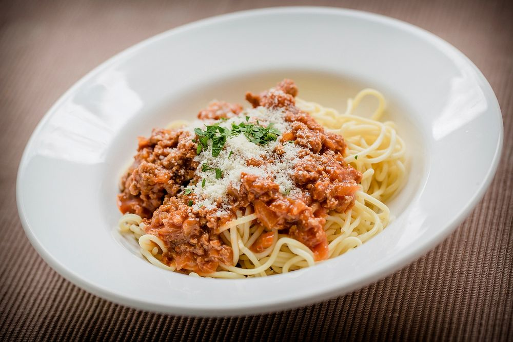

Spaghetti

Description
A simple baked spaghetti everyone can enjoy. Taken from the allrecipes website.
Ingredients
- 3/4 pounds lean ground beef
- 16 ounces jar of spaghetti sauce
- 1 pound spaghetti
- 1 cup shredded mild cheddar cheese
Steps
- Preheat the oven to 350 degrees F (175 degrees C).
- Cook beef in a large skillet over medium-high heat until crumbly and brown, 8 to 10 minutes. Stir spaghetti sauce into beef. Reduce heat and simmer.
- Meanwhile, bring a large pot of lightly salted water to a boil. Stir in spaghetti; cook until al dente, 8 to 10 minutes. Drain.
- Add spaghetti to meat mixture; mix well. Transfer to a 9x13-inch dish. Top with Cheddar cheese.
- Bake in the preheated oven until heated through and cheese is bubbly, about 30 minutes.
Home